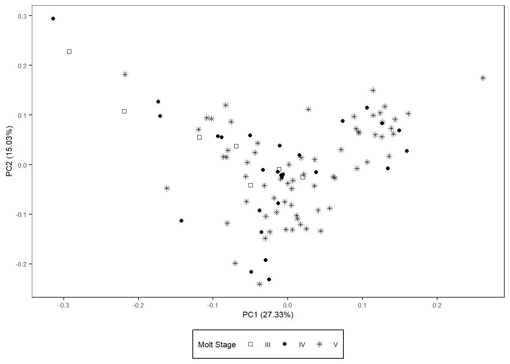
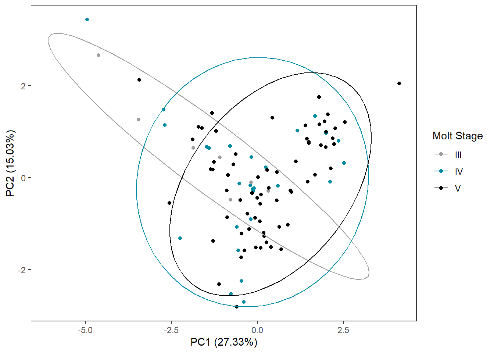
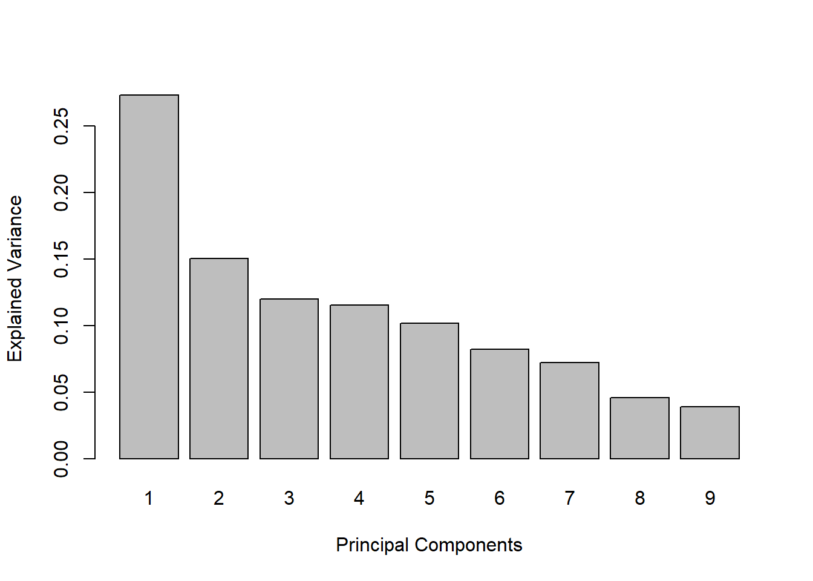
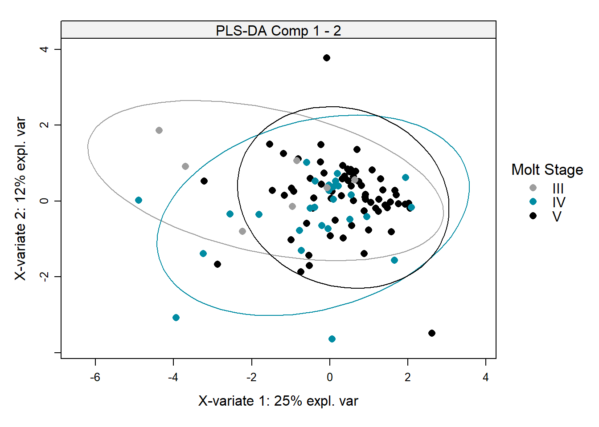
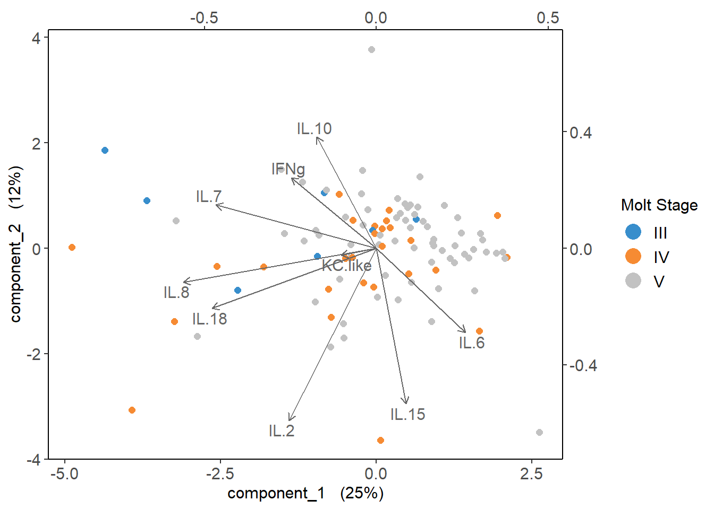
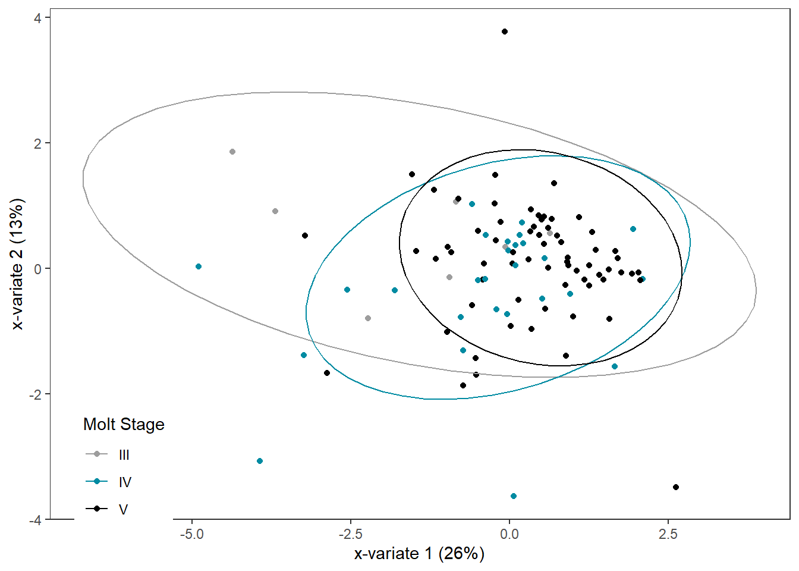

Chapter 4 Molt stage ~ cytokines
4.2 Read in data
cyto <- read.csv("Output Files/cleaned_cytokine.csv")
meta <- read.csv("Output Files/metadata_cyto.csv")
mindc <- read.csv("Input Files/mindc.csv") %>%
mutate(half=value/2)
# Merge cytokine & metadata
data <- merge(cyto, meta, by="Sample")
# Tidy data, remove cytokines with < 10% (11) detections, remove pups with NA molt stage
data_tidy <-
data %>%
select(2:14) %>%
select_if(function(x) sum(x>0) > 11) %>%
mutate(molt.stage=data$molt.stage,
sample=data$Sample) %>%
filter(!is.na(molt.stage))4.3 PCA on log-transformed, scaled, centered cytokine data
# Make all non-detects half the limit of detection
data_half <- data_tidy
for (i in 1:nrow(data_half)) {
for (j in 1:9) {
{if (data_half[i,j]==0) {
k <- which(mindc==colnames(data_half)[j])
data_half[i,j] <- mindc[k,3]
}
else{next}
}
}
}
# Log transform, scale, and center data
data_log <-
data_half %>%
mutate_at(1:9, log)
data_scaled <-
data_half %>%
mutate_at(1:9, log) %>%
mutate_at(1:9, function(x) scale(x, center=TRUE, scale=TRUE))
# Molt Stage
PCA_scaled_molt <- prcomp(data_scaled[,1:9], center=FALSE, scale=FALSE)
autoplot(PCA_scaled_molt, data=data_scaled, shape="molt.stage") +
scale_shape_manual(values=c(0,16,8), name="Molt Stage") +
theme_bw() +
theme(panel.grid=element_blank(), text=element_text(size=8),
legend.background=element_rect(size=0.5, linetype="solid", colour ="black"),
legend.position="bottom")## Warning: The `size` argument of `element_rect()` is deprecated as of
## ggplot2 3.4.0.
## ℹ Please use the `linewidth` argument instead.
## This warning is displayed once every 8 hours.
## Call `lifecycle::last_lifecycle_warnings()` to see where this
## warning was generated.
PCA_scaled_molt_df <- data.frame(x=PCA_scaled_molt$x[,1],
y=PCA_scaled_molt$x[,2],
molt.stage=data_scaled$molt.stage)
PCA_scaled_molt_ggplot <-
ggplot(PCA_scaled_molt_df,
aes(x=x,
y=y,
col=molt.stage)) +
geom_point() +
stat_ellipse() +
labs(x="PC1 (27.33%)",
y = "PC2 (15.03%)",
name="Molt Stage") +
scale_color_manual("Molt Stage",
values=c("#9d9d9d","#008ba2", "#000000")) +
theme_bw() +
theme(panel.grid=element_blank(),
legend.position.inside=c(0.1, 0.1))
PCA_scaled_molt_ggplot
4.4 Test for normality
# Create dataframe for results
norm_results <- data.frame(matrix(ncol=0, nrow=9)) %>%
mutate(cyto=colnames(data_scaled)[1:9],
W=NA,
pvalue=NA)
# Truncate data
data_norm <-
data_scaled[,1:9]
# Test!
for (i in 1:9) {
test <- shapiro.test(data_norm[,i])
norm_results[i,2] <- round(test$statistic, digits=3)
norm_results[i,3] <- test$p.value
}
norm_results # all not normally distributed except IL-18## cyto W pvalue
## 1 IFNg 0.922 1.650434e-05
## 2 IL.2 0.774 3.627258e-11
## 3 IL.6 0.656 4.713637e-14
## 4 IL.7 0.874 8.975786e-08
## 5 IL.8 0.396 1.709517e-18
## 6 IL.10 0.648 3.290539e-14
## 7 IL.15 0.439 7.137549e-18
## 8 IL.18 0.978 9.563755e-02
## 9 KC.like 0.594 2.736602e-154.5 Cramer Test
Multivariate composition of the cytokine pattern between each molt stage pairwise comparison It can handle multiple variables, potentially complex interactions and correlations.
# Separate data by molt stage
three <-
data_scaled %>%
filter(molt.stage=="III") %>%
select(1:9) %>%
data.matrix()
four <-
data_scaled %>%
filter(molt.stage=="IV") %>%
select(1:9) %>%
data.matrix()
five <-
data_scaled %>%
filter(molt.stage=="V") %>%
select(1:9) %>%
data.matrix()
# Run Cramer Tests!
cramer.test(three, four)##
## 9 -dimensional nonparametric Cramer-Test with kernel phiCramer
## (on equality of two distributions)
##
## x-sample: 7 values y-sample: 27 values
##
## critical value for confidence level 95 % : 3.653665
## observed statistic 2.751229 , so that
## hypothesis ("x is distributed as y") is ACCEPTED .
## estimated p-value = 0.1578422
##
## [result based on 1000 ordinary bootstrap-replicates]##
## 9 -dimensional nonparametric Cramer-Test with kernel phiCramer
## (on equality of two distributions)
##
## x-sample: 27 values y-sample: 67 values
##
## critical value for confidence level 95 % : 3.052099
## observed statistic 2.365338 , so that
## hypothesis ("x is distributed as y") is ACCEPTED .
## estimated p-value = 0.1878122
##
## [result based on 1000 ordinary bootstrap-replicates]##
## 9 -dimensional nonparametric Cramer-Test with kernel phiCramer
## (on equality of two distributions)
##
## x-sample: 7 values y-sample: 67 values
##
## critical value for confidence level 95 % : 3.064741
## observed statistic 4.311041 , so that
## hypothesis ("x is distributed as y") is REJECTED .
## estimated p-value = 0.01298701
##
## [result based on 1000 ordinary bootstrap-replicates]4.6 Cytokine Importance
The default splitting method for classification is gini index. Optional parameters:
- minbucket: smallest # observations allowed in terminal node. Small terminal nodes likely to be biased by single outlier.
- minsplit: smallest # observations in the parent node that can be further split. Default=20.
- maxdepth: prevents tree from growing past certain depth/height. Default=30.
- cp: complexity pararmeter: minimum improvement in the model needed at each node. Based on the cost complexity of the model (measures mis-classification rate of potential branches). Small cp will allow for more complex models.
- changing cp from default to 0.001 does not change tree*
Cross Validation
- split training set in 2+ parttitions & creating model for each partition. Partition acts as validation set, and remaining set is training data. Common form is k-fold:
- The models are always trained on k - 1 of the folds, with the remaining fold being used as test data; this process is repeated until each fold has acted exactly once as test set.
Classification Ability
- ROC AUC (range 0-1)
- 0.5 = random guessing
- 1 = indicates perfect performance
- A score slightly above 0.5 shows that a model has at least “some” (albeit small) predictive power. This is generally inadequate for any real applications.
- 0.5 = random guessing
- Resources:
# Prepare data for CART
data_cart <-
lapply(data_scaled, c) %>%
data.frame() %>%
select(!sample) %>%
mutate(molt.stage=factor(molt.stage, levels=c("III", "IV", "V")))4.6.1 Cross Validation
***Not sure if this is worth doing with n=7 for molt stage III?
# Creating task and learner
task <- as_task_classif(molt.stage ~ .,
data = data_cart)
task <- task$set_col_roles(cols="molt.stage",
add_to="stratum")
learner <- lrn("classif.rpart",
predict_type = "prob",
maxdepth = to_tune(2, 5),
minbucket = to_tune(1, 30),
minsplit = to_tune(1, 30)
)
# Define tuning instance - info ~ tuning process
instance <- ti(task = task,
learner = learner,
resampling = rsmp("cv", folds = 10),
measures = msr("classif.ce"),
terminator = trm("none")
)
# Define how to tune the model
tuner <- tnr("grid_search",
batch_size = 10
)4.7 How different groups are
Methods:
- Partial least squares regression (PLSR) figures
- 2-dimensional Kolmogorov-Smirnov test
- not sure this one makes sense!
4.7.1 PLSDA
PLSDA is a supervised dimensionality reduction method that is similar to PCA but incorporates class labels to maximize the separation between groups.
One advantage of PLS is that it has fewer assumptions and hence it can use predictor variables that are collinear and not independent.
pls_x <-
data_cart[,1:9]
pls_y <-
data_cart %>%
select(molt.stage)
# PCA Model (to compare)
pca <- pca(pls_x,
ncomp=9,
center=FALSE,
scale=FALSE)
plotIndiv(pca,
group=pls_y$molt.stage,
ind.names=FALSE,
ellipse=TRUE,
legend=TRUE,
legend.title="Molt Stage",
title="PCA")

# PLSDA Model
plsda_model <- mixOmics::plsda(pls_x,
pls_y$molt.stage,
scale=FALSE,
ncomp=9)
plotIndiv(plsda_model,
ellipse=TRUE,
ind.names=FALSE,
col.per.group=c("#9d9d9d","#008ba2","black"),
pch=16,
legend=TRUE,
legend.title="Molt Stage",
style="lattice",
title="PLS-DA Comp 1 - 2")
## Warning in biplot.mixo_pls(plsda_model, ind.names = FALSE, legend.title = "Molt
## Stage"): The 'tune.spca' algorithm has used scale=FALSE. We recommend scaling
## the data to improve orthogonality in the sparse components.
# ggplot2
plsda_ggplot <-
data.frame(x = plsda_model$variates$X[,1],
y = plsda_model$variates$X[,2],
molt.stage = plsda_model$Y)
molt_plsda_ggplot <-
ggplot(plsda_ggplot,
aes(x=x,
y=y,
col=molt.stage)) +
geom_point() +
stat_ellipse() +
labs(x="x-variate 1 (26%)",
y = "x-variate 2 (13%)",
name="Molt Stage") +
scale_color_manual("Molt Stage",
values=c("#9d9d9d","#008ba2","black")) +
theme_bw() +
theme(panel.grid=element_blank(),
legend.position=c(0.1, 0.1))## Warning: A numeric `legend.position` argument in `theme()` was
## deprecated in ggplot2 3.5.0.
## ℹ Please use the `legend.position.inside` argument of `theme()`
## instead.
## This warning is displayed once every 8 hours.
## Call `lifecycle::last_lifecycle_warnings()` to see where this
## warning was generated.